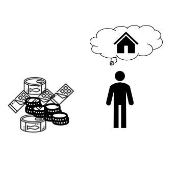

명성
체력
총점
1950. 07. 17
//무엇을 팔아야 할지,,고민사진
사람이 일단 생존하기 위해선 '먹어야'한다. 그럼 먹거리를 찾아보자
근처 미군이 주둔해있는데, 가끔 외국제품을 싸게 팔거나 공짜로 그냥뿌린다
그것을 가져다가 팔아볼까?
어업이 활발한 항구가 있는 만큼 생선을 가져다가 손질해서 팔까?
//구걸하는 사진 , 일단, 가진게 없으니 그들에게 물건을 받는다면
그걸 필요로 하는 사람에게 팔자!

//모으고, 집에 대한 생각
어느정도 식량, 삯을 벌었다. 허기를 채우고 집을 지어서 살곳을 구하자
빵 사용 :
//사용갯수에 따라 1개당 체력 +10 다음 장에 반영